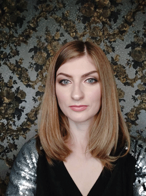
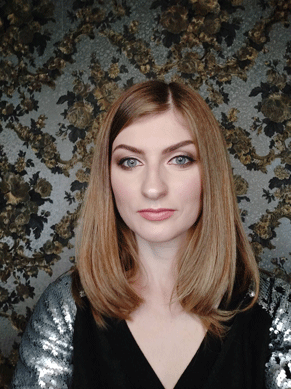

В главных ролях:
- Роберт Паттинсон
- Зои Кравиц
- Колин Фаррелл
- Питер Сарсгаард
- Пол Дано
- Энди Серкис
- Джеффри Райт
- Джон Туртурро
- Макс Карвер
- Кон О’Нилл
Предстоящий американский супергеройский фильм, основанный на одноимённых комиксах издательства DC Comics. Картина будет выпущена компанией Warner Bros. и будет перезагрузкой всех фильмов о Бэтмене.
Фильм является десятым по счёту фильмом из Расширенной вселенной DC. Режиссёром и сценаристом фильма выступит Мэтт Ривз, а главную роль исполнит Роберт Паттинсон
Разработка
В октябре 2014 года студия Warner Bros. объявила, что в разработке находится сольный фильм о Бэтмене, роль которого вновь исполнит Бен Аффлек. В июле 2015 года сообщалось, что Аффлек ведёт переговоры со студией по поводу постановки фильма и совместного написания сценария с Джеффом Джонсом.
После выхода фильма «Бэтмен против Супермена: На заре справедливости» руководитель агентства WME Патрик Уайтсел подтвердил, что Аффлек написал сценарий для сольного фильма о Бэтмене и в настоящий момент его рассматривают студия и DC. В мае 2016 года Джереми Айронс подтвердил, что он появится в фильме про Тёмного Рыцаря.
На Comic-Con в Сан-Диего в июле 2016 года было официально подтверждено, что Аффлек станет режиссёром картины. В августе 2016 года на одной из страниц Аффлека в социальных сетях был опубликован тестовый материал, в котором был показан персонаж Детстроук. 8 сентября 2016 года Джефф Джонс подтвердил, что Джо Манганьелло сыграет наёмника Слейда Уилсона, который, возможно, станет главным злодеем фильма.
Тут скоро появятся рецензии
Тут скоро появятся премьеры
Тут скоро появятся актеры
Тут скоро появятся награды
Тут скоро появятся факты
Тут скоро появятся сайты
Подпишитесь на обновления